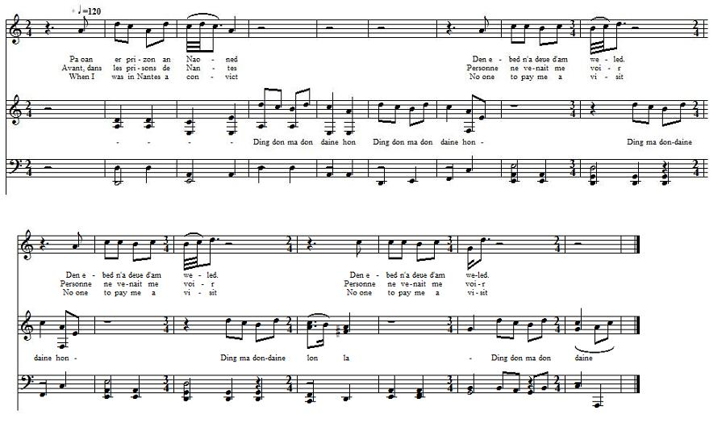

Kloarek Ar C'hlaouder II
Le Clerc Le Claouder II- Clerk Le Claouder II
Chant qui fait suite à Kloarek ar C'hlaouder publié par H. Pérennès
Il est à rapprocher de "Kloarec Ar Glaouiar" pp. 421 -427 des "Gwerzioù Breizh Izel", tome II, de Luzel"Chant recueilli par M. le chanoine Ollivier, ancien supérieur du Petit-Séminaire de Plouguernével et communiqué à M. le Chanoine Besco.
Celui-ci fait la remarque suivante:
" L'inspiartion, ici, est peu élevée: c'est la passion qui parle, mais, comme facture, comme caractéristique du génie breton, de la poésie bretonne, je connais peu de poèces plus représentatives, plus parfaites."
(Note du publicateur des 2 parties de ce chant, le Chanoine Henri Pérennès dans "Les Annales de Bretagne", volume 46 3-4, pages 278, en 1939).

Mélodie
Arrangement Christian Souchon (c) 2013
Le chanoine Pérennès n'indique pas de mélodie.
La présente mélodie, "La fille du Duc de Nantes", est tirée du périodique "La Paroisse Bretonne de Paris" de l'Abbé François Cadic, janvier 1907.
Le chant du Barzhaz dont l'intrigue s'apprente d'avantage à celle-ci est la Filleule de Duguesclin .
|
KLOAREK AR C'HLAOUDER II
1. - Pa oan er prizon an Naoned Den ebed n'a deue d'am weled. (div wech) 2. Den ebed n'a deue d'am weled 'Med al logod hag ar razed. 3. 'Med al logod, ar razed du: Ar re-ze oa va brassañ mu. 4. Bremañ paz on deuet da Wened, Tud awalc'h a zeu d'am weled. 5. Tud awalc'h a zeu d'am weled Tudjentil vraz ha baroned. 6. Tudjentil vraz ha baroned. - Kloarek Klaouder petra 'peus graet? 7. - N'am-eus graet netra a-nevez, Med karet ur plac'h triwec'h vloaz. 8. Ganti ur groaz aour n'he c'herc'henn: Poultrenn a ven ma n'he c'harjen. - 9. Kloarek ar C'hlaouder a c'houle, Da veg ar potañs pa bigne: 10. — P'lec'h 'ma Margod ar Senechal, Pa n'eo war ar ru o vragal? 11. - Ema n'he c'hambr alc'hwezet mat, An alc'hwezioù 'n godell he zad. 12. - Tapit-c'hwi din va binioù Ma larin c'hoaz ur zon pe zaou. 13. Ma larin c'hoaz ur zon pe zaou 'Vit rejouisseiñ ar c'halonoù. 14. 'Vit rejouisseiñ ar c'halonoù, Kalon 'r re zo er c'hambr-kavioù. - 15. Margod ar Senechal a c'houle Gant he matez vihan an deiz-se: 16. - Petra no nevez er c'hanton Pa glever ar zoner o son? 17. Kloarek Klaouder, sur, a glevan: Zo 'lared e zonioù diwezhañ! - 18. Margod ar Senechal pa glevaz, Ridosoù he gwele ' vregas. 19. Ridosoù he gwele ' vregas, D'ober pazennoù dont d'an diaz . 20. - Emaoc'h, va zad, war ho torchenn Da varn va fried d'ar gordenn, 21. Kloarek Klaouder, deuit-c'hwi d'an traoñ Ma veomp-ni dimezet hon-daou! 22. Me 'z ay ganeoc'h da di ho tad. Me 'z ay d'ar park da labourat. 23. - Madoù awalc'h zo ' ti va zad, Margod , 'vit derc'hel deoc'h ho stad! 24. Ur c'harros alaouret pezo Gant pevar marc'h ouzh hen roulo! - |
LE CLERC LE CLAOUDER II
1. - Avant, dans les prisons de Nantes Personne ne venait me voir. (bis) 2. Personne ne venait me voir Sinon, les souris et les rats! 3. Sinon les souris, les rats noirs, Mes distractions les plus charmantes. 4. Maintenant que je suis à Vannes, Les visiteurs sont légions. 5. Les visiteurs sont légions: Hauts gentilshommes et barons! 6. Hauts gentilshommes et barons! - Claouder, que fites-vous donc? 7. - Je n'ai rien fait de bien méchant: Celle que j'aime a dix-huit ans 8. Elle porte une croix au cou Ne plus l'aimer? Je serais fou! - 9. Le clerc Claouder est en haut Oui, tout en haut de l'échafaud. 10. — Ma Margot n'est donc pas venue? Je ne la vois pas dans la rue! 11. - Dans sa chambre elle est enfermée. La clef son père l'a cachée. 12. - Allez me chercher mon biniou. Un air ou deux: ce sera tout! 13. Je ne jouerai qu'un air ou deux De quoi rendre les gens heureux; 14. De quoi réjouir les coeurs tendres Que l'on enferme dans les chambres. - 15. Margot Sénéchal demanda A sa servante ce jour-là: 16. - Que se passe-t-il au canton, Pour qu'un sonneur joue ces chansons? 17. - Pour sûr, c'est le clerc Claouder, Et ce chant-là, c'est son dernier! - 18. En entendant celà, Margot Arrache du lit les rideaux, 19. Et les noue pour faire une échelle Et descendre dans la ruelle. 20. - Vous voilà, père, qui trônez, Livrant mon époux au gibet! 21. Clerc Claouder, descendez donc: Nous nous marierons, pour de bon! 22. J'irai vivre chez vos parents, Et j'irai travailler aux champs. 23. - Père possède assez de bien. Vous ne dérogerez en rien. 24. Vous aurez carrosse doré, Quatre chevaux pour le tirer. - Traduction: Christian Souchon (c) 2013 |
CLERK LE CLAOUDER
1. - When I was in Nantes a convict No one to pay me a visit. (twice) 2. To pay a visit no one came. But mice and rats did, all the same! 3. Now and then a mouse, a black rat: My greatest merriment was that! 4. But since I was transferred to Vannes I have seen quite many a man! 5. Quite many a man I have seen: Barons, friends of the king and queen. 6. Friends of the king and queen, barons. - Clerk Claouder, what is the reason 7. Why you're in jail? - I loved, that's all, The daughter of the Seneschal. 8. Eighteen years, a cross round her neck. But our love her father would wreck. - 9. Now clerk Le Claouder he has told, When he ascended the scaffold: 10. - Where's Mag, the Seneschal's daughter? I don't see her, what's the matter? 11. - Her dad locked her up in her room; Pocketed the key, I presume! 12. - Fetch me my pipes, bring them upstairs: I want to play one or two airs, 13. One or two melodies only; Just to make people feel happy, 14. To rejoice the hearts of the youth... Above all, those locked in a booth. - 15. Seneschal's Mag asked, that day, Her maid, when she heard the pipes play: 16. - What is afoot, this afternoon, Why does the piper play a tune? 17. - It is Clerk Claouder, to be sure, And it is you he wants to lure. - 18. The seneschal's daughter has stripped Her bed from the sheets that she ripped, 19. Made a rope ladder with the shreds By which she escaped, free of dreads. 20. - Father, who sit on your pillows, You sent my husband to gallows! 21. Now, clerk Le Claouder come right down! To be married let's go to town! 22. I'll move to your house. I won't yield. I'm ready to work in the fields. 23. - My father is well off, my dear: Why should your life be so austere?. 24. You shall have a carriage of gold, Hitched up to it horses, fourfold! Translation: Christian Souchon (c) 2013 |
Clerc Le Claouder,1ère partie
Retour à "Marquis de Guérand"